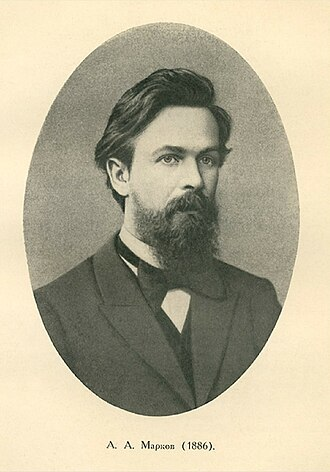

1856–1922
Russian
Probability, number theory, analysis
Andrey Andreyevich Markov was born in Ryazan, Russia. He studied at Saint Petersburg University under Chebyshev, who became his doctoral supervisor and lifelong intellectual influence. The Petersburg school of probability, built by Chebyshev, was the strongest in the world at the time, and Markov became its most distinguished product.
Markov’s inequality (1884) is the simplest and most general tail bound in probability: for a non-negative random variable $X$ with finite expectation, $P(X \geq a) \leq E[X]/a$. Despite its simplicity, it is the root of an entire tree of concentration inequalities. Chebyshev’s inequality is a direct corollary (apply Markov to $(X - \mu)^2$), and the “transform then apply Markov” strategy underpins Chernoff bounds and all exponential tail estimates.
Markov’s greatest innovation was the theory of Markov chains, introduced in 1906. He was motivated partly by a desire to extend the law of large numbers beyond independent variables and partly by a polemical disagreement with the theologian Pavel Nekrasov, who claimed that the law of large numbers implied human free will. Markov showed that dependence between variables does not prevent convergence — demolishing Nekrasov’s argument with a mathematical counterexample.
He was known for his prickly temperament and willingness to engage in public disputes. He resigned from the Russian Orthodox Church in protest and asked the Tsar to exempt him from Russian citizenship. He died in Petrograd in 1922, having lived long enough to see the revolution transform the country he had spent his career fighting with.
| Phase | Page | Referenced for |
|---|---|---|
| Phase 12 | Variance and Covariance | Navigation link to Markov and Chebyshev inequalities |
| Phase 12 | Markov and Chebyshev Inequalities | Markov’s inequality (1884): $P(X \geq a) \leq E[X]/a$ |
| Phase 12 | Markov and Chebyshev Inequalities | Chebyshev’s doctoral supervisor; the “transform then apply Markov” strategy |
| Phase 12 | Markov and Chebyshev Inequalities | Tightness example showing Markov cannot be improved in general |
| Phase 12 | The Law of Large Numbers | Markov’s inequality applied in the proof of the weak law |
| Phase 12 | Conditional Expectation as Projection | Markov and Chebyshev in the phase summary |